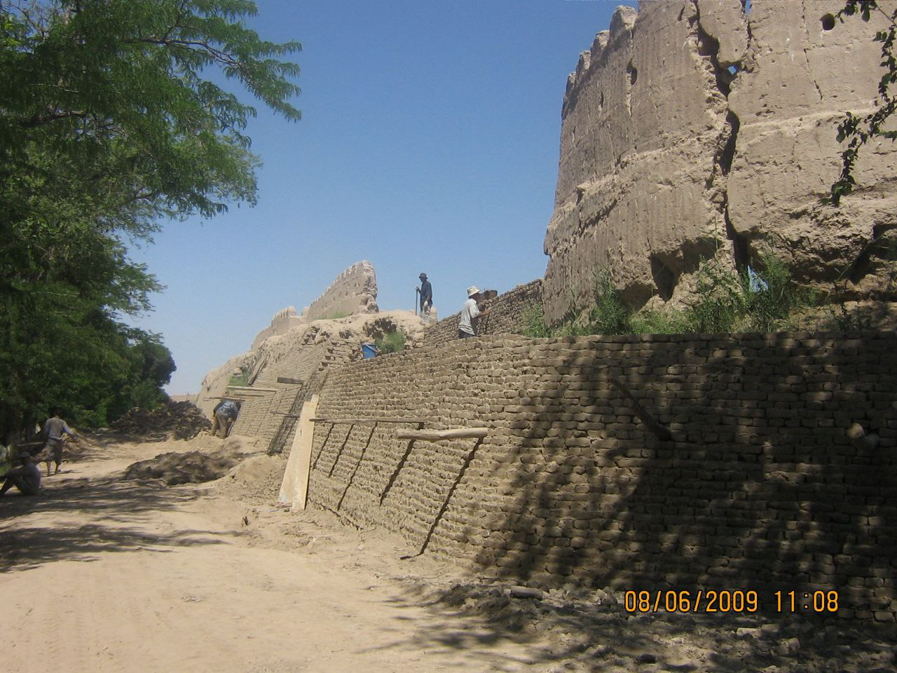

"XIVADAGI “DESHON QAL’A"
1. Me’moriy inshootning nomi:
"XIVADAGI “DESHON QAL’A"
2. Me’moriy inshoot tiklangan yil:
XIX asrga oid
3. Me’moriy inshoot joylashgan manzil:
Xorazm viloyati Xiva shahri hududida joylashgan.
4. Me’moriy inshootning qurilish materiallari:
Xom g‘isht, paxsa - guvala, qum, alebastr-ganch, yog‘och
5. Inshootning bosh fasadi h.k.lar:

6. Me’moriy inshootning o‘lchamlari
Qal’a devorining uzunligi 6250 m; Qal’aning devorining balandligi – 8, 0 -10,0 m; Qal’a tagzamin qalinligi 4 - 6 m; Qal’a darvozalari soni – 10 ta.
7. Me’moriy inshoot to‘g‘risida tarixiy ma’lumot:
Ichan-Qal’a devori atrofida mudofaa uchun tiklangan Deshon - Qal’a devori 1842 yilda Xiva xoni Ollaqulixon tomonidan Gʻouk ko‘ldan tuproq olinib, 30 kun davomida hashar yo‘li bilan qurib bitkazilgan. Deshon-Qal’a asosan turkman - yovmut xujumidan saqlanish maqsadida barpo etilgan.
Qal’aning asosiy qurilish materiallari – loy, g‘isht, tuproq va guvalaklar. Shoir va tarjimon Ogahiyning guvohlik berishicha, Olloqulixon bu devorni qurish uchun uch yillik muddatda (davlatga har bir fuqaro yiliga 12 kun bepul ishlab berishi shart bo‘lgan), ya’ni 36 kunda qurib bitkazgan. Qal’a devori qurilishida 200 mingdan ziyod kishi qatnashgan. Qal’a devorining turli tarafida - 10 ta darvozasi bo‘lgan. Hozirda ushbu darvozalardan faqatgina ikkitasi – Urganch (1912-yildan Qo‘sha) Darvoza va Qo‘y (Xalq tilida Hazorasp deb yuritilgan) Darvoza saqlanib qolgan. 6220 metr uzunlikdagi Deshan Qal’a tarkibiga kiruvchi barcha darvozalarni keltirib o‘tadigan bo‘lsak, ular: Urganch (Qo‘sha) darvoza; Gadoylar, Gandimyon, Qo‘y (Hazorasp); Pishkanik; Angarik; Shixlar; Tozabogʻ (Qibla Toza bog‘), Shohimardon; Dashoyoq deb nomlangan. 2ta darvozasidan tashqari barcha darvozalari yo‘qolib ketgan
8. Me’moriy inshootning texnik holati:
45% devor konstruksiyalari ekologik va texnogen ta’sirlar natijasida yo‘qolib ketgan, texnik holati qoniqarli.
BOSH SAHIFAGA QAYTISH